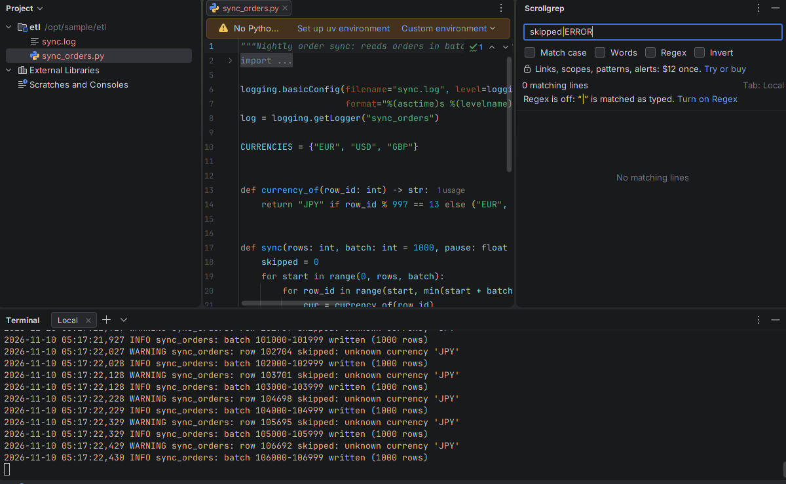
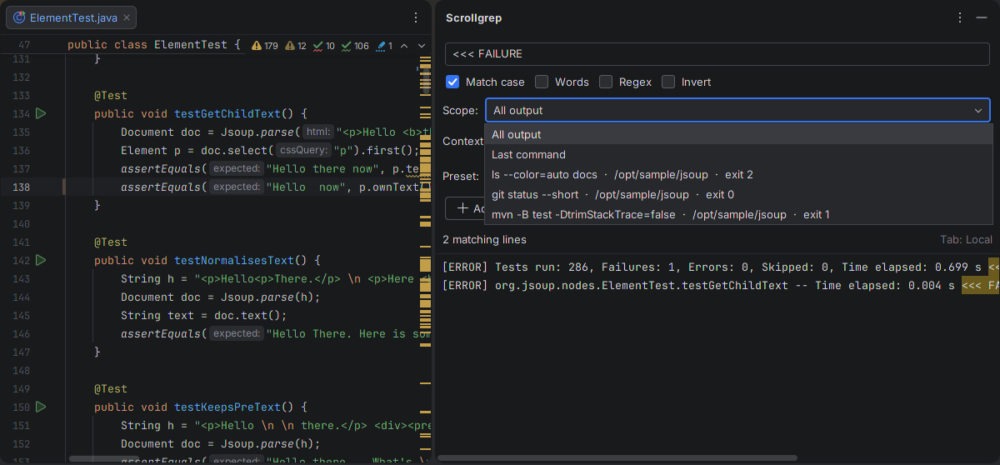
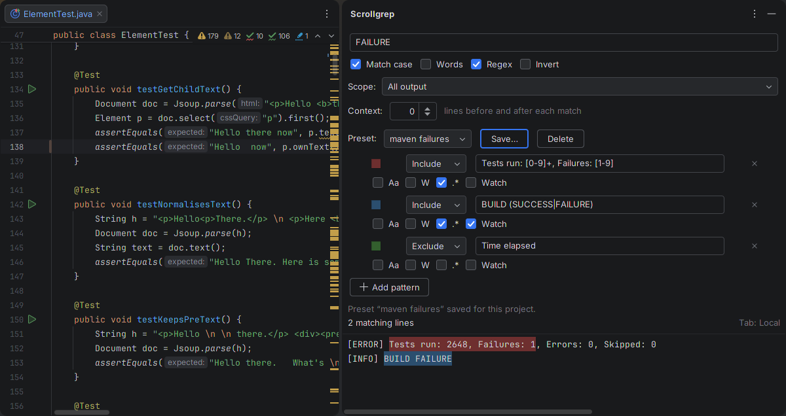
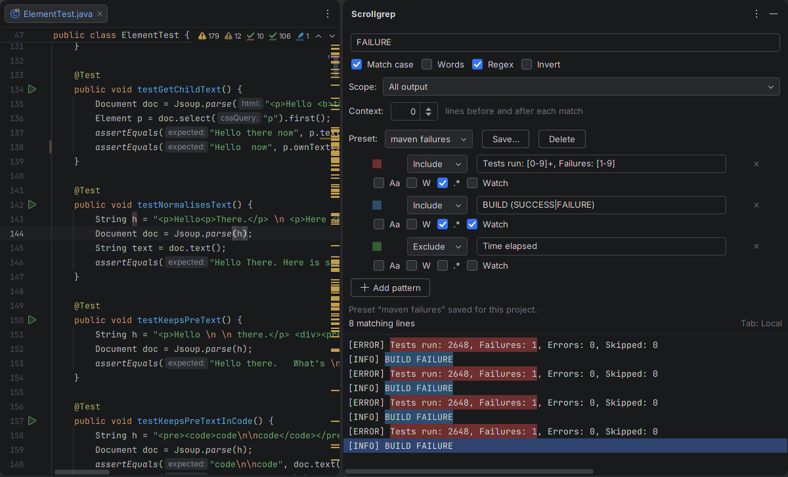

Scrollgrep quick start
Installing Scrollgrep, the free live filter, and what the licence adds. Back to the Scrollgrep product page.
Install (JetBrains IDEs 2025.3 or later)
- Download scrollgrep-1.1.3.zip (free; keep it zipped). In the IDE, open Settings | Plugins, click ⚙, choose Install Plugin from Disk…, pick the zip and click OK, then Accept the third-party plugin notice.
- Restart the IDE: it loads plugins with paid features only after a restart. PyCharm shows a Restart IDE button; IntelliJ IDEA may close Settings without offering one, so choose File | Exit and start it again, or use Find Action (Ctrl+Shift+A): Restart IDE. A Scrollgrep tool window then appears on the right. The IDE may then show "Cannot update plugin": it cannot look for updates of a plugin installed from a file.
- Check that Settings | Tools | Terminal | Engine is Reworked, the default since 2025.2. Scrollgrep does not see Classic terminal tabs.
The JetBrains Marketplace listing is in review. Once it is live you can also type Scrollgrep in the Plugins search field and click Install, and get updates from there.
Tested in IntelliJ IDEA 2025.3 (the full test suite, with real Bash, Zsh and sh terminals) and 2026.3 (the free filter on fast output, with both of its terminal emulators), PyCharm 2025.3 (install and filter check) and PyCharm 2026.3 (filter, Regex hint, and the licensed features with a test licence: Python frame, last command with context, preset, watch alert), on Linux. WebStorm, GoLand, the other JetBrains IDEs, Windows, macOS, PowerShell and Remote Development have not been tested yet.
Live filter (free)
- Open a Terminal tab and run something that prints a lot, such as your test suite.
- Press Ctrl+Shift+G while the terminal has focus. Or right-click the tab's title, or inside the output, and choose Filter with Scrollgrep. Or use Find Action (Ctrl+Shift+A): Filter Terminal Output.
- The filter field has focus. Type text, or tick Regex (Alt+X) for a pattern such as
FAIL|Exception: with Regex off,|is matched as typed, and when such a pattern finds nothing the panel says so and offers Turn on Regex. The panel lists the matching lines the tab still holds and keeps adding new matches while the command runs. - Press Escape to go back to the terminal. The panel keeps filtering.


skipped|ERROR with Regex off finds nothing, so the panel says why; Turn on Regex fixes it in one click.- Match case, Words, Regex and Invert mean what grep's
-i(off),-w,-Eand-vmean. Regex usesgrep -Esyntax:[[:digit:]]+and\<word\>work as in grep, and as in grep\dmeans the letter "d"; the panel says so and suggests[0-9]. - A progress bar or spinner redrawn in place appears once, with its final text.
- An invalid pattern is outlined in red with grep's reason, and the results stay as they were. Clearing the field clears the results.
- The panel follows the Terminal tab you select.
- Matches stay in the panel after the Terminal trims its own history, for output that reached the Terminal while the panel showed the tab (or the tab had a filter). A panel opened after a run sees only what the Terminal still holds. On IDE 2026.3, see fast output.
- The panel keeps up to 32 MB and 200,000 lines per tab (Settings | Tools | Scrollgrep, 4 to 1,024 MB). Past the limit the oldest lines that do not match go first. A tab you leave with an empty filter is not kept.
- Changing the pattern on a long session does not freeze the IDE: long re-filters finish in the background, and the next keystroke cancels them.
Fast output on IDE 2026.3
The 2026.3 IDEs start new Terminal tabs on the Ghostty emulator. When output prints faster than it can show it (a cat of a large file, a generator at full speed), the Terminal shows only its screen until the output pauses, then the last few thousand lines: what scrolled past in between never reaches the Terminal's text, so no plugin can read it. Scrollgrep keeps every line that does arrive, in order, and lines up what the Terminal sends after a pause with what it already holds, so a build with pauses between bursts loses nothing. Where lines are missing, the results show ⋯ the Terminal skipped lines here ⋯, the status line says "some lines missing", and the panel offers use JediTerm for new tabs.
That link switches the IDE's own setting (Registry: terminal.use.ghostty.emulator) off, and only when you click it. New tabs then run on the JediTerm emulator, as in 2025.3, which passes every line on; no restart is needed. Open a new tab and run the command again. To switch back: Find Action (Ctrl+Shift+A), Registry…, untick or tick terminal.use.ghostty.emulator.

Fewer matches than grep?
- A "⋯ the Terminal skipped lines here ⋯" row or "some lines missing": the Terminal skipped output (above). Use JediTerm for new tabs and run the command again.
- The panel was opened after the run: it sees only what the Terminal still holds (about 1 MB of output by default). Open it before the run, or leave the tab with a filter.
- More than 32 MB or 200,000 lines in the tab: the oldest lines go first; the status line says how many matches were dropped. Raise the limits in Settings | Tools | Scrollgrep.
- Regex off:
a|bis matched as typed (the panel offers Turn on Regex). Match case off finds upper and lower case, asgrep -i.
Links in the results (licensed)
Paths and stack-trace lines in the results open the file at the line, and at the column when one is printed: absolute paths; paths relative to the directory the command ran in, then to the project, then the one project file whose path ends with the printed path (when that is unique); path:line and path:line:column; JVM frames (matched by package), Python tracebacks, Node.js frames and Go panics. A path that matches several files opens a chooser; a path that matches nothing, or contains spaces, stays plain text.

ElementTest.java:138 in a JVM frame.One command, with context (licensed)
With the IDE's shell integration (tested with Bash and Zsh), Scope limits the filter to all output, the last command, or a command picked from a list that shows each command line, its directory and its exit code, also for a command that printed more than the Terminal keeps. Context shows that many lines before and after each match, like grep -C, with -- between groups. In a shell without integration, such as sh, the panel says why the scope is unavailable and filters all output.

Several patterns, kept per project (licensed)
Add pattern adds a row with its own Include or Exclude choice, toggles, highlight colour and Watch box. Up to eight patterns work at once, the filter field counting as one; a ninth is refused with a message. A line is shown when it matches an include pattern and no exclude pattern. Save… keeps the set as a named preset in this project; the Preset list brings it back.

Watch alerts (licensed)
A pattern with Watch on raises one IDE notification with the matching line when it appears in any Terminal tab of the project, even with the Terminal hidden. Matches within 2 seconds (Settings, 1 to 60) are grouped into one notification with a count. Show in Scrollgrep opens the panel on that tab with the line selected; if the tab was closed meanwhile, a note says so.

Licence and trial
The live filter is free and never locks. Everything else needs a JetBrains Marketplace licence: a perpetual licence, $12 once, the same for personal and commercial use, every update included, nothing renews. The 30-day trial starts from the IDE's licence dialog, through Try or buy in the panel; the dialog asks you to log in to your JetBrains Account. The licence and the trial become available when the JetBrains Marketplace listing is live (in review); until then the free filter works and Try or buy cannot start a trial. The licence dialog is the IDE's own, not Scrollgrep's: it says "Subscription" even though Scrollgrep's licence is perpetual. You pay $12 once, and nothing renews. Without a licence the panel shows one line with the price instead of the licensed controls; nothing pops up at project open or when a trial ends.
Known limits
- Results show in Scrollgrep's own panel; lines are not hidden inside the terminal. Results are plain text, without the terminal's colours, and show tabs as spaces.
- Reworked terminal engine on IDE 2025.3 or later only. SSH sessions (Classic engine) and full-screen programs such as vim, less and htop are not filtered.
- With Bash, the IDE reports only the first part of a compound command line in the Scope list.
- Clearing the terminal (
clear, Clear Buffer) clears that tab's results too. - IDE 2026.3 with the Ghostty emulator (its default): output that prints faster than the Terminal shows it is partly skipped by the Terminal itself; Scrollgrep marks where (it cannot know how many lines) and offers JediTerm, which keeps every line (fast output).
- Tested on Linux in IntelliJ IDEA and PyCharm 2025.3 and 2026.3. Not tested yet: WebStorm, GoLand and the other JetBrains IDEs, Windows, macOS, PowerShell, Remote Development, and a real Marketplace trial or purchase.
- Not covered: the Run, Debug, Build and Services consoles, Run configurations that use a terminal console, Remote Development and Code With Me clients. English only.
- The Terminal API Scrollgrep uses is marked experimental by JetBrains, so a new IDE version can need a compatibility update.
Privacy
Scrollgrep reads the output of the Terminal tabs in the open project and keeps a copy of it in memory, not only the matching lines, within the limits above, for the tab its panel shows and tabs left with a filter. Patterns and presets are stored in the project's workspace settings. It writes no output to disk, makes no network calls, and collects and sends nothing. The licence check is done by the IDE through JetBrains Marketplace licensing. See also the privacy policy.
Support
Email support@ochrestack.com with the IDE version (Help | About), the shell you use, and what you saw. We answer every message, usually within one business day. Bug reports and feature requests are welcome at the same address.